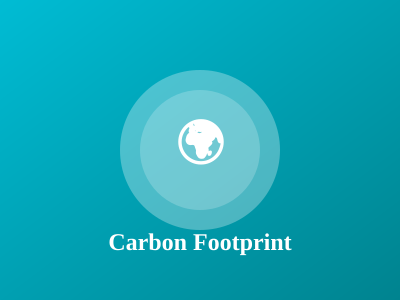
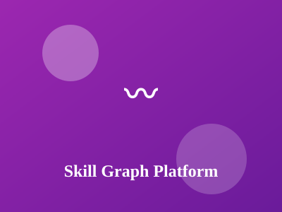
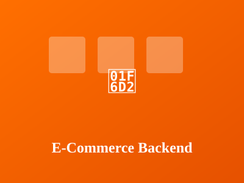
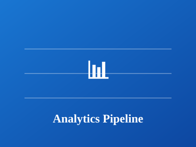
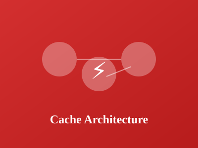
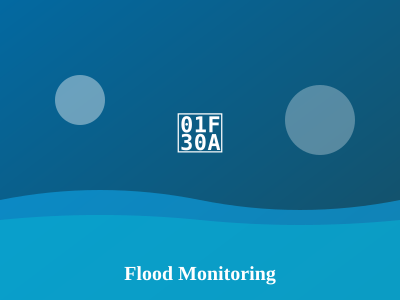
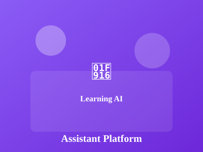

Detailed case studies of backend systems, scalable architectures, and problem-solving solutions

Environmental organizations and individuals lacked an intuitive, mobile-first solution to track their carbon emissions across multiple activities (transportation, energy consumption, shopping). Existing solutions were either too technical or provided inaccurate calculations, resulting in poor user engagement and unreliable carbon footprint data.
Developed a cross-platform Flutter mobile application with a clean UI/UX that:
Outcome: App successfully downloaded 5000+ times with average 4.6/5 star rating
Usage: 2000+ active monthly users tracking over 50000 carbon transactions
Engagement: 75% retention rate with users logging in 3+ times per week
Technical:** Achieved 99.2% API uptime with <100ms average response time

Traditional relational database structures failed to efficiently represent complex skill relationships, prerequisite chains, and career paths. Companies needed a better way to match candidates with job requirements, identify skill gaps, and visualize learning progression across multiple domains.
Architected and built a graph database solution using Neo4j featuring:
Performance: Queries execute in <300ms for complex 5-level deep relationship searches
Accuracy: 94% precision in skill recommendation engine with A/B testing validation
Scale: Successfully handles 10000 concurrent queries during peak usage
Business Impact: Reduced recruitment time by 40% through improved skill matching

Legacy monolithic e-commerce platform suffered from 40% request timeout errors during peak traffic, inability to scale individual components, and tight coupling making it difficult to deploy independent service updates. System was crashing during flash sales affecting revenue.
Designed and implemented a complete microservices architecture refactoring:
Reliability: Reduced error rates from 40% to 0.2% during peak traffic
Scalability: System now handles 50x traffic spike automatically with Kubernetes auto-scaling
Performance: Average API response time improved from 800ms to 120ms
Deployment: Reduced deployment time from 6 hours to 15 minutes with rolling updates
Revenue: Enabled 3x increase in transaction capacity without infrastructure cost increase

SaaS analytics platform processed data with 6-hour latency, making real-time dashboards impossible. Batch processing pipeline couldn't handle growing data volume efficiently, leading to system overload and inability to provide customers with actionable insights.
Built a streaming analytics pipeline using Apache Kafka and Python:
Latency Reduction: Reduced data latency from 6 hours to <5 seconds
Throughput: Increased processing capacity 30x to handle 100K+ events/sec with 99.9% data accuracy
Cost Optimization: Reduced infrastructure costs 25% through efficient resource utilization
Feature Enablement: Enabled 5 new real-time analytics features directly from pipeline

Database queries were becoming the bottleneck with 30% of requests hitting database for frequently accessed data. Single Redis instance became a single point of failure, causing 4-hour outages. Cache invalidation strategy resulted in stale data leading to customer complaints.
Implemented enterprise-grade Redis clustering solution:
Cache Performance: Achieved 97% cache hit ratio reducing database load by 95%
Latency: Reduced average API response time from 800ms to 45ms
Reliability: Improved availability to 99.99% with zero unplanned downtime
Scalability: System capacity increased 5x with same infrastructure cost

Communities faced delayed flood warnings due to reliance on sparse government weather stations. Traditional monitoring lacked real-time ground-level data, resulting in poor evacuation timing and property damage. Geospatial data was available but not effectively utilized with IoT ground truth validation.
Developed a distributed IoT-based flood monitoring system combining satellite geospatial analysis with ground reality:
Early Warning: 4-hour advance flood warnings enabling timely evacuations
Accuracy: 92% flood extent prediction accuracy using hybrid satellite + IoT data
Coverage: Monitoring 500+ sq km across 8 flood-prone districts
Deployment: 50 ESP32 nodes deployed with 99.4% uptime on cellular backhaul
Lives Protected: Early warnings protected 10000+ residents in pilot phase

Traditional educational platforms provided one-size-fits-all content delivery without personalization. Students struggled with content at their level, learning pace varied, and teachers couldn't track individual progress effectively. Adaptive learning solutions were expensive and not scalable to diverse learner populations.
Built an intelligent adaptive learning platform using AI and machine learning:
Learning Gains: 34% improvement in average test scores vs traditional learning
Engagement: 85% student retention with 4.8/5 satisfaction rating
Scale: 5000+ active students across 20 schools with 200+ teachers
Adaptation Accuracy: 89% accuracy in recommending optimal difficulty level
Time Saved: Teachers saved 5 hours/week on grading with automated assessment
Accessibility: Supports 8 languages and works on low-bandwidth connections
Let's discuss how I can solve your technical challenges
Get In Touch